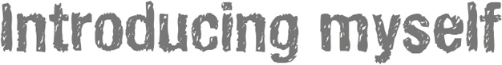
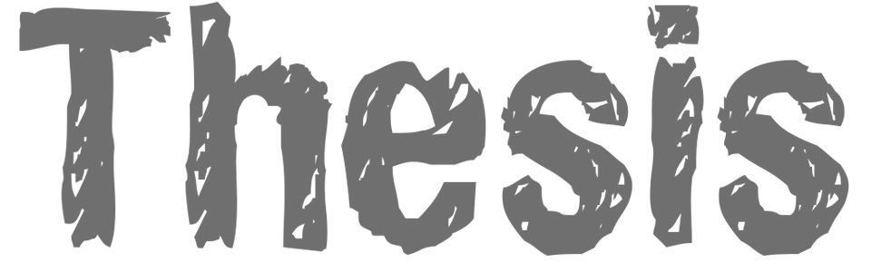

|
 |

The most ancient, modern, difficult and easiest form of expression in the world.
Drawing is an intellectual activity that links sensing, feeling, thinking and doing. It is a way to visually represent what’s in our minds and memory and to communicate those ideas with others.
By drawing, we can link the internal world of memories and thoughts with the exterior world. Drawing can help us to understand diffrent views of our world and to interpret and communicate ideas.

For a graphic designer, the fundamental value of visual literacy* is clear. Drawings, and especially collections of drawings by individuals, offer a starting point to gather material for the study of the society’s visual memory. For my graduation project on the Royal Academy of Art, I will use drawings of different people in order to communicate in a new way.
*Visual literacy is the ability to interpret, negotiate, and make meaning from information presented in the form of an image. Visual literacy is based on the idea that pictures can be “read” and that meaning can be communicated through a process of reading. The term ‘visual literacy’ is credited to John Debes 1969.
Follow my project on facebook
Graduation show 03 July - 10 July 2015
In the first week of july there will be my graduation exhibition at the academy. Feel free to visit this exhibition.
Royal Academy of Art
Prinsessegracht 4
2514 AN Den Haag

The fight for the public opinion
The persuasiveness of visual communication.
The intention of my thesis was to bring light to the phenomenon of visual literacy, so that designers, visual artists or anyone working with images,may use a model of reference that differentiates laws, where they exist, and identifies where there are no laws. In the end I tried to find out how designers could use this knowledge to improve the persuasiveness of their work.